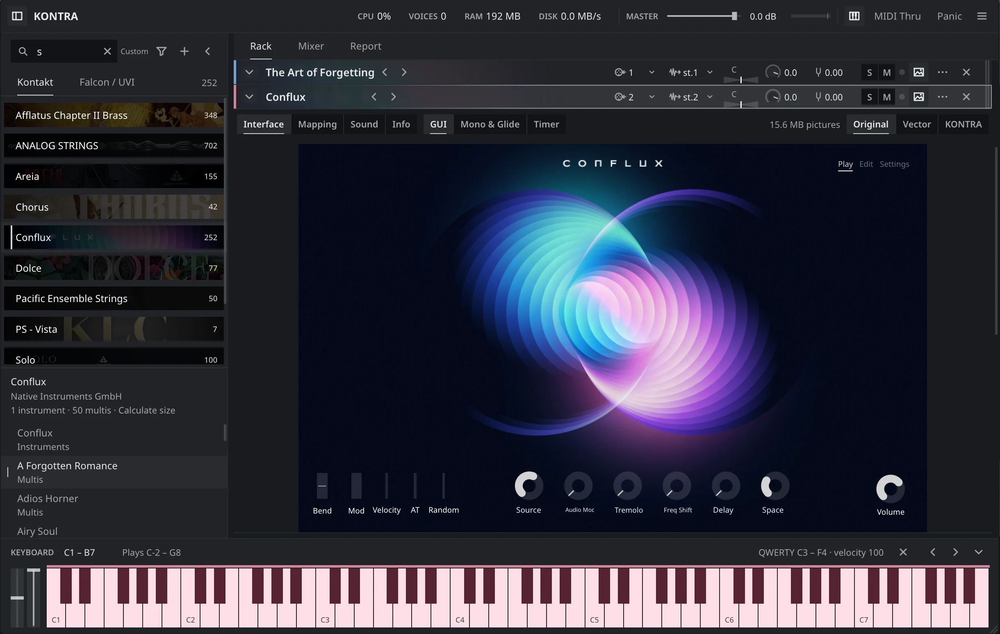

Your libraries.
Set free.
A free, open-source sample player.
Kontakt and UVI / Falcon in active development.
AlphaLatest nightly
CLAP, VST3 and standalone.


A free, open-source sample player.
Kontakt and UVI / Falcon in active development.
CLAP, VST3 and standalone.
